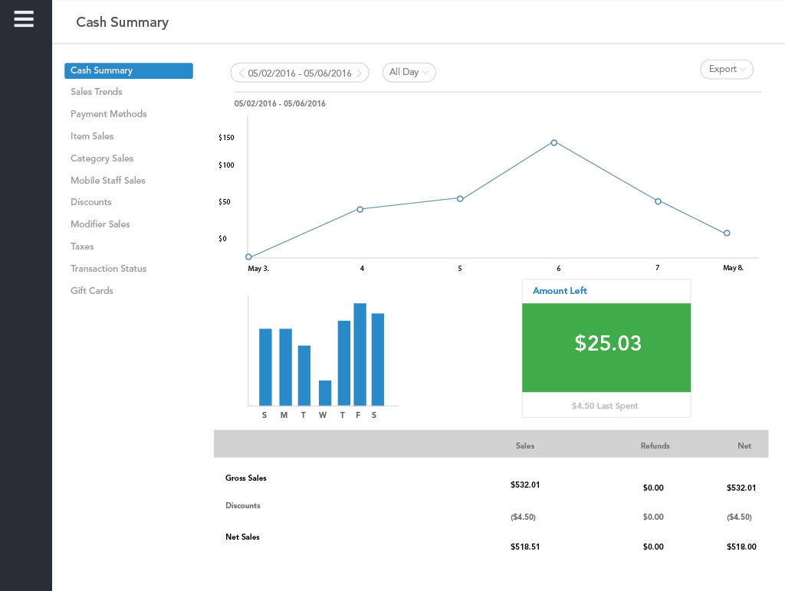
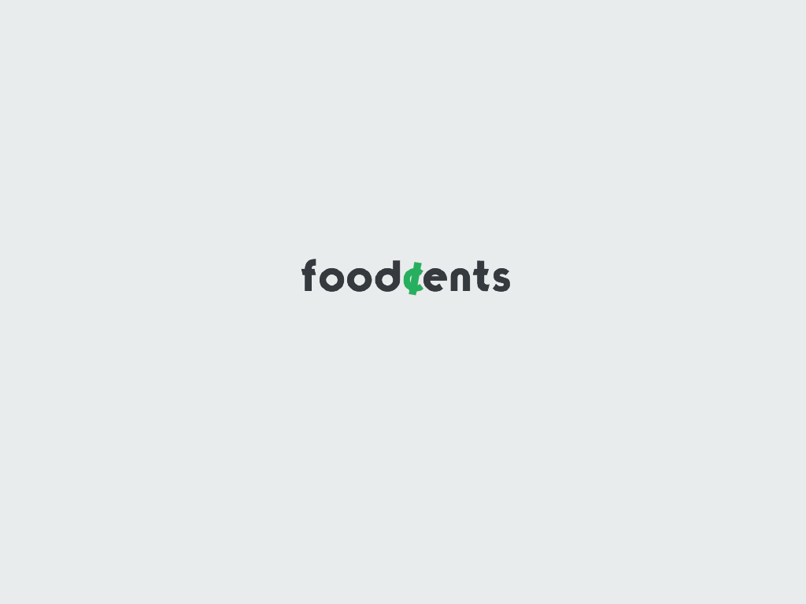
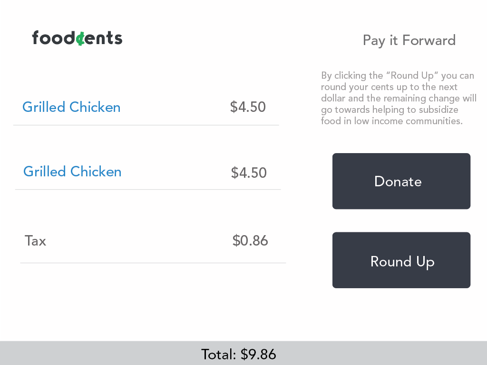
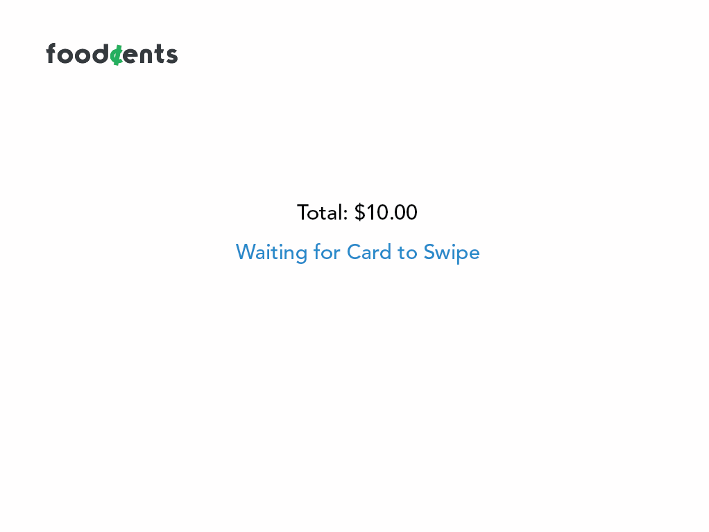
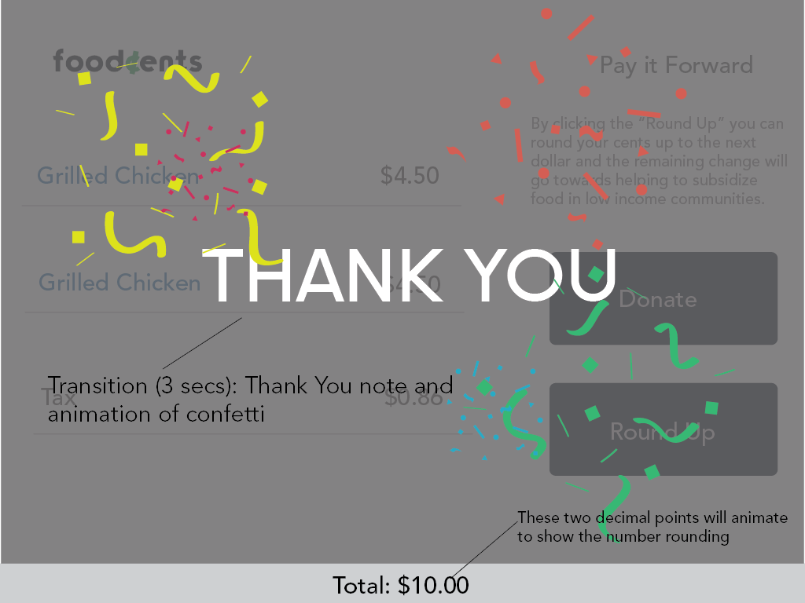
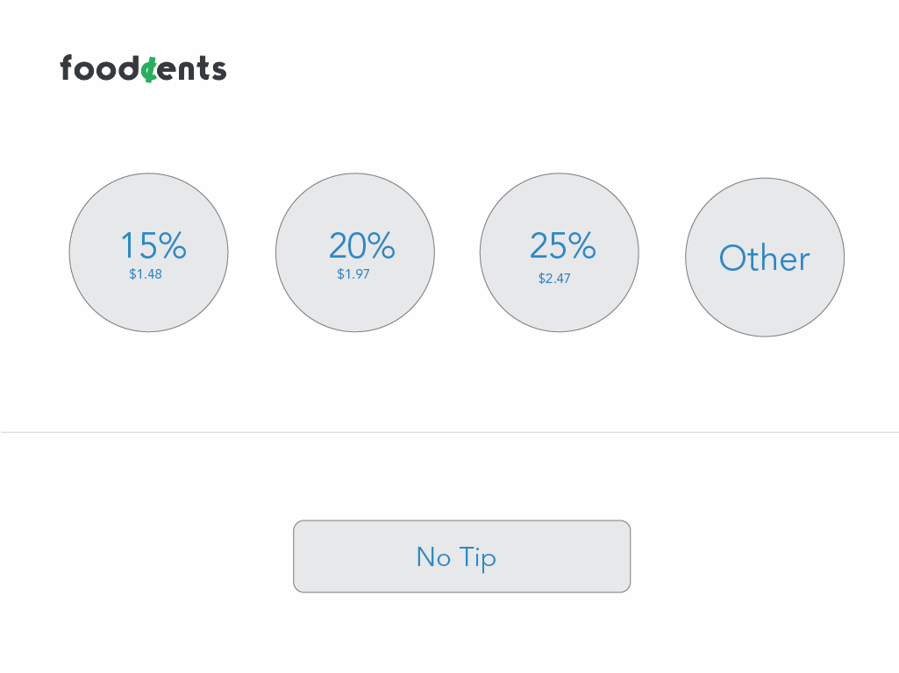

FoodCents
Building for Food Truck Workers | Human Center Design Thinking
User Oriented Collaborative Design is a human centered design class in which we had to interview and design for a particular user group. This class is all about understanding useres, asking the right questions and building a product/service centered around the users' needs. For this class, I was placed in a team of five to help research and interview food truck workers.
The Problem:
Millions of Americans live in food deserts*. The mobility of food trucks combined with the character of people who run them put food trucks in a unique position to be able to solve the problems of food deserts in America.
Our Solution:
Foodcents is a service designed to allow food truck workers to help others without sacrificing their time or money. By crowdsourcing donations from food truck, customers in a city, such as Boston, the trucks can fund trips to food deserts and sell food at a reduce cost, making healthy and affordable food more accessible.
HOW IT WORKS
Interfaces
The gallery below shows:
-

Dashboard pt.1
Food Truck Worker
-

Dashboard pt.2
Food Truck Worker
-

Loadng Page
Customer
-

Ordering Interface
Customer
-

Purchasing Interface
Customer
-

Post-Purchase Interface
Customer
-

Post Purchase Interface pt. 2
Customer
The Process: Key Insights
Based off our interviews, we aimed to answer the question: Why Food Trucks? Food trucks are unique and very different from restaurants because there is an element of mobility, lack of defined roles and a less competitive work environment. These are some key insights based on the principles that we discovered:
Below, we created a requirements spreadsheet of how our service met the needs of these values.
Persona Descriptions
These descriptions were formed based on a mix of users that we interviewed with. We discovered that amongst the food truck workers we interviewed, there were (3) distinct personas:
Ownership Ownen: Started his own falafel food truck because he is proud of his heritage and wants to share a part of his culture with others. Pulling from his existing skill set, he identified and filled a lacking area in his city Springfield to start his business because he wanted to feel some sort of ownership and agency. Although this could be found in a more traditional job, Owen is excited by the idea of sole responsibility of his success. He didn't know much about the Food Truck industry, but he knew enough to get started. He considers himself a "scrappy" entrepreneur and enjoys looking back on the growth of his business as a way to measure his own personal growth. His career path is flexible and may consider opening a restaurant in the future, but for now he is fine earning his success from his food truck.
Do it for Others Danielle: Danielle decided to join the food truck business because she enjoys serving others. For Danielle, working on a food truck is more about her strong emotional desire to bring joy to others through food more than making money. She considers herself a major foodie and a great chef, and loves to see other people enjoying the fruits of her labor. She likes the mobility of the food trucks because it allows her to travel to different locations and meet diverse groups of people. The culture of people who work in the food trucks also motivates and inspires her. During music festivals or other large events, food trucks often exchange food and supplies with each other and Danielle appreciates how competing food trucks can form such a generous community.
Identity Conscious Ian: Ian recently graduated college. Like many recent graduates, he possesses a high level of uncertainty as to what career path he wants to pursue in life. Ian is unique because he is focused on figuring out who he is and how he fits into the rest of society. As a result, he is very concerned with how people perceive him. He wants to be different and interesting, so he chooses to work in a food truck. Ian enjoys the fast-paced environment and constant stimulation of the job. But most of all he likes how "hip" it makes him appear and how it sets him apart from people to choose to work in a traditional 9am-5pm work environment. As Ian matures, he'll learn more about himself and begin to feel more confident about his identity. He knows that he won't stay in the food truck industry forever, but he believes that he will eventually feel secure enough to pursue a more traditional career path.